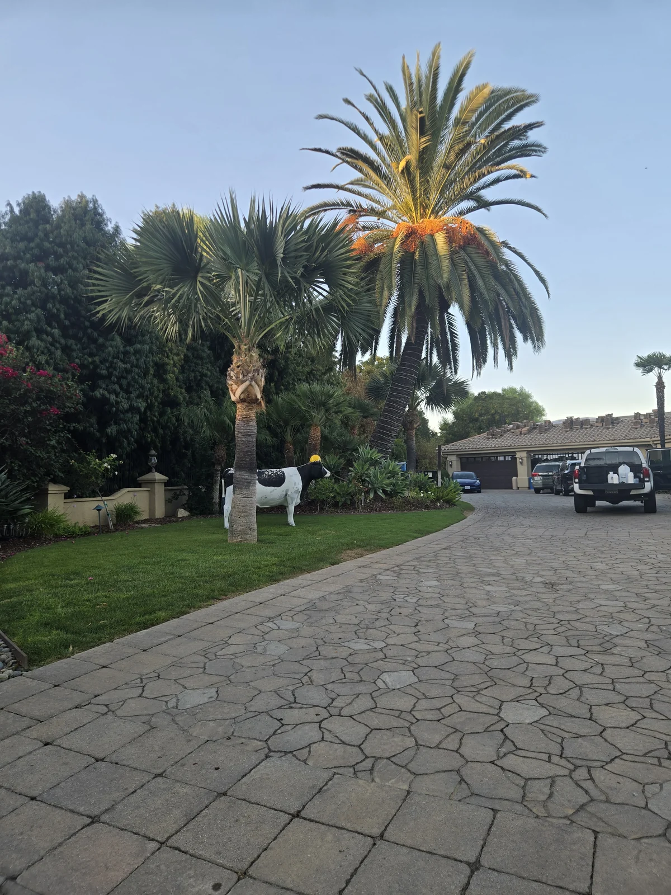
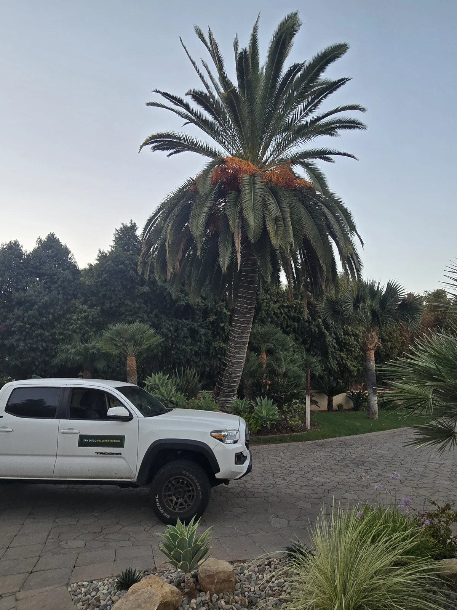

I photographed this Canary Island date palm during a customer visit on September 28. The first photograph was not a crown detail. It was the whole setting: the palm, driveway, surrounding palms, planting beds, and the route I had to work from.
That wider view tells me something a close-up cannot. The palm is the reason for the visit, but the site determines how I can approach it.

I start with the whole palm
I want one photograph that shows the palm from crown to ground. Then I move closer.
The wide view establishes which palm I am looking at and where it stands. It shows the driveway, nearby planting, other palms, and the available approach. If I come back months later, I have a real reference instead of a memory of “the big palm near the house.”
That matters on a property with several palms. A good record should make it difficult to confuse one specimen with another.

Then I move into the crown
The crown view gives me the structure of the canopy in one frame. I can see the newest central growth, the older outer fronds, overall symmetry, and how the crown is carrying itself on that day.
From there, closer photographs can preserve individual details. Those photographs may support a comparison later, but they do not replace looking at the palm in person. They also do not turn one visible feature into a diagnosis.
The order matters: identify the palm, photograph the complete crown, then record the details that deserve attention.

The setting affects the work
On this visit, the palm stood inside a mature mixed landscape rather than by itself in an open lot. The driveway provided an approach. Other palms and dense planting defined the space around the trunk. Those facts are ordinary, but they belong in the plan.
I look at where equipment can be placed, what is growing around the base, whether irrigation or grade needs attention, and whether another qualified professional may be needed for work outside my scope.
This is why I do not reduce palm care to a treatment date. Treatment may be part of the work. So are identification, access, photographs, condition changes, and the next responsible action.
The palm does not arrive for care by itself. I have to understand the property around it and still keep the individual palm from getting lost in the landscape.